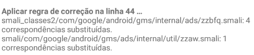
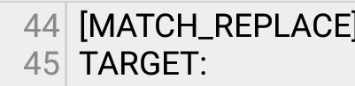

As regras são baseadas no número da linha vertical, você pode encontrá-las abrindo um editor de arquivos.
Abaixo você pode ver alguns exemplos!
Neste exemplo encontramos uma regra que foi aplicada, pertencente a linha "44" que é a regra "44" e abaixo encontramos a seguinte mensagem "4 correspondência substituídas" isso significa que 4 componentes dentro do arquivo foi substituído!

Abrindo o patch.txt você encontra a regra "44" que foi aplicada, desta linha vertical.
